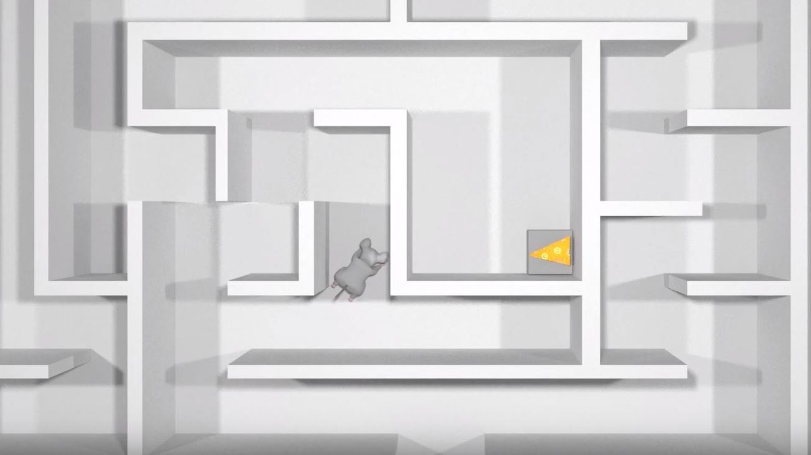
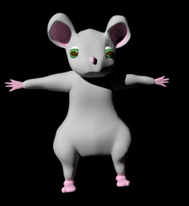
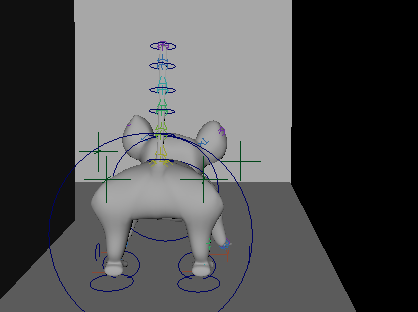

Lab Rat.
We began by developing and pitching storyboards to the class. We then decided to develop my storyboard for Lab Rat, a film about a rat that sees the dark, bizarre underbelly of clinical research. After developing our storyboard, we produced an animatic that paced our film and set music to it.
We then began to model our assets. I worked primarily on the main rat character. I modeled his body in Maya and created a skin for him in Adobe Illustrator. In addition to the main rat character, I also modelled and developed a skin for a monstera leaf prop.
I then rigged the rat character, giving it movement at major joints, eyes that were able to shift and fixate on things and a functioning skeleton. After the rigging was complete, we moved on to animation.
I was primarily involved in developing the walk cycle for the rat and moving it through the maze in the first few seconds of the film. In the future, I’d like to develop more dexterity in the rat’s toes while also refining the movement of his body in connection to his legs.
This short was me and group's first dive into using Maya. I thought it was especially fun because I got to use some of the modelling skills I usually use in Fusion 360 in this more story based paradigm. Additionally, it was a lot of fun to see how our narrative took shape in our models, music choice, editing, and animating.